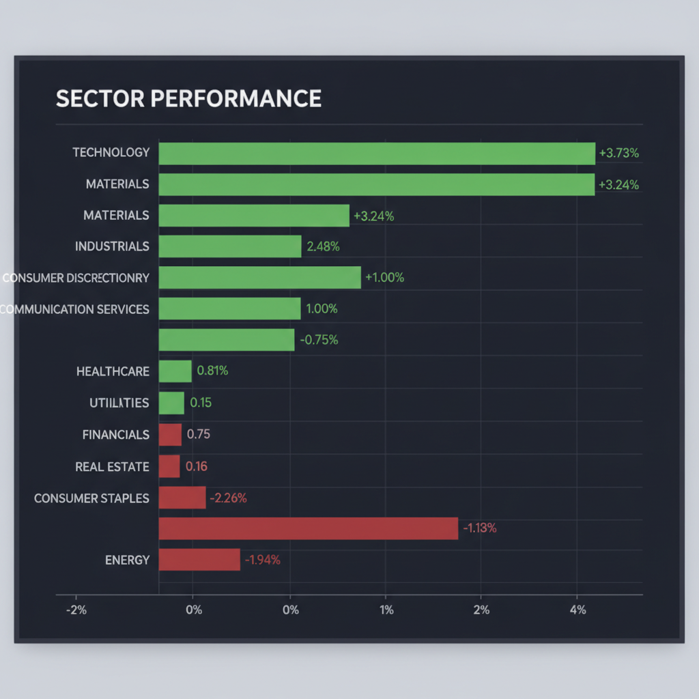
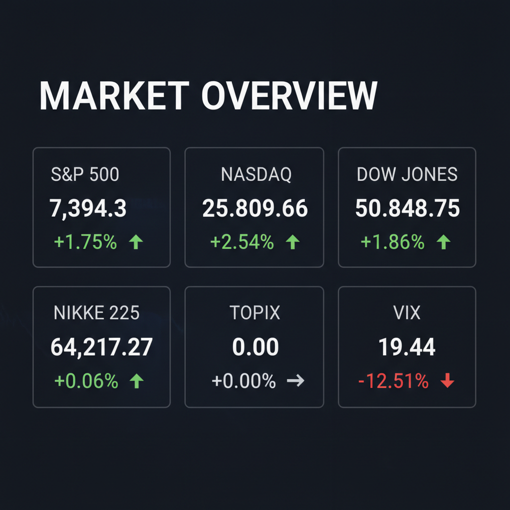

各エージェントがWeb調査結果を踏まえて独立に10段階評価した結果です。平均7以上=強気、4〜6.9=中立、4未満=弱気。
| 銘柄 | ファンダメンタルズアナリスト | テンバガーハンター | マクロエコノミスト | テクニカルストラテジスト | リスクマネージャー | 平均 | 判定 |
| ETN | 8 AIインフラ需要で業績堅調 | 9 AIインフラ需要、業績好調、分散効果あり | 8 AIインフラ需要、利益率向上期待 | 8 AIインフラ需要で業績好調、再編で利益率向上 | 7 AIインフラ需要と事業再編で業績堅調 |
8 | 強気 |
| INTC | 4 赤字事業抱え、構造改革途上 | 7 製造業再編、AI製造受託期待、ファウンドリ赤字は懸念 | 4 割安感はあるが、赤字事業と競合懸念 | 4 期待先行、赤字事業の改善見通し不透明 | 4 ファウンドリー赤字と競合激化で回復長期化 |
4.6 | 中立 |
| ADBE | 3 AI競争懸念とCFO交代で下落 | 3 AI競争激化、CFO辞任、株価低迷、リスク大 | 3 AI代替懸念、CFO辞任で不透明感 | 3 CFO交代、AI競争で先行きの不透明感 | 2 AI競争激化とCFO辞任で先行き不透明 |
2.8 | 弱気 |
| ZENA | 1 財務リスク高く、株価急落 | 1 財務リスク大、株価低迷、テンバガー候補から除外 | 1 財務リスク大、株価下落継続 | 1 財務リスク高く、株価下落続く | 1 財務赤字と株価低迷、投機的リスク高 |
1 | 弱気 |
エージェントが推奨した中小型株について、Google検索で最新情報を調査した結果です。
ZENA（ZenaTech, Inc.）に関する投資判断に必要な最新情報を以下にまとめます。
ZENA（ZenaTech, Inc.）投資情報まとめ
1. 企業概要 ZenaTech, Inc.は2017年にカナダのブリティッシュコロンビア州バンクーバーで設立された企業向けソフトウェアテクノロジー企業です。主にAIドローン、Drone-as-a-Service、量子コンピューティング、およびミッションクリティカルなビジネスアプリケーション向けのエンタープライズSaaSソリューションの開発に焦点を当てています。従業員数は約500人です。2026年6月10日時点での時価総額は約1.33億ドルです。同社はITサービス、テクノロジーサービスセクターに属しており、Russell 3000® Indexに採用されたことで、その成長と市場での認知度が示されています。
2. 直近の業績・決算情報 最新の決算は2026年6月1日（2026年第1四半期）に発表されました。 * 売上高（2026年第1四半期）: 6.04百万USD * EPS（2026年第1四半期）: -0.36 USD * 純利益（通期）: -32.36百万USD * 売上高（通期）: 9.24百万USD 過去1年間で従業員数は278.79%増加しており、売上高も2025年には9.24百万ドルと、2024年の1.43百万ドルから大きく成長しています。
3. 最新ニュース・材料（直近1-2週間の重要なニュース） * ZenaTechは、ウェスタンカナダの地理空間および測量会社を買収するオファーに署名したと発表しました。これは、公益事業、林業、農業、政府部門におけるDrone as a Serviceを加速することを目的としています。 * ZenaTechはRussell 3000® Indexに採用され、これは同社の成長と市場での認知度における重要な節目とされています。 * Litchfield HillsのアナリストBarry Sineは、ZenaTechのレーティングを「強気」に設定し、目標株価を4ドルとしました。
4. アナリスト評価・目標株価 Litchfield HillsのアナリストBarry Sine氏は、ZenaTech(ZENA.US)に対して「強気」のレーティングを付与し、目標株価を4ドルとしています。このアナリストは過去1年間で57.1%の的中率と17.2%の平均リターンを記録しています。
5. リスク要因 ZenaTechは現在赤字経営であり、直近12ヶ月のPERはマイナス値を示し、通期の純利益は-32.36百万USD、基本EPSは-1.06 USDです。これは財務上の懸念となり得ます。また、テクノロジー業界は競争が激しく、急速な技術変化や規制環境の変化もリスク要因となり得ます。具体的な競合や規制に関する詳細な情報は、今回の調査からは得られませんでした。
6. 株価の最近の動き ZENAの株価は、2026年6月10日の終値で1.53ドルでした。直近1日では+4.79%と上昇しましたが、長期的なトレンドは下落傾向にあります。52週高値は2025年10月15日の7.11ドル、52週安値は2026年5月21日の1.15ドルです。過去1ヶ月で-35.71%、6ヶ月で-61.86%、年初来で-58.20%、1年間で-71.46%と大幅に下落しています。
ETN（Eaton Corporation plc）に関する最新の投資判断情報は以下の通りです。
1. 企業概要 Eaton Corporation plcは、インテリジェントな電力管理ソリューションを提供する企業です。電気、油圧、機械動力の効率化に貢献し、データセンター、公益事業、産業、商業、航空宇宙、モビリティ市場など幅広い分野で製品を提供しています。 特に、AIデータセンターの電化と電力インフラ投資の主要な受益者として位置づけられています。 現在の時価総額は2026年6月時点で約1,457.9億ドルです。 産業セクターの主要プレーヤーであり、S&P 500指数の構成銘柄でもあります。 北米の電気および航空宇宙市場において、多くの製品カテゴリーで市場シェア1位または2位を占める優位なポジションを確立しています。
2. 直近の業績・決算情報 2026年第1四半期（3月31日終了）の決算では、以下の記録的な業績を発表しました。 * 売上高: 75億ドル（2025年第1四半期比17%増）。これは過去最高記録であり、アナリスト予想を4.3%上回りました。 * 調整後1株当たり利益 (EPS): 2.81ドル。これも過去最高を記録し、アナリスト予想の2.73ドルを上回りました。 * 純利益: 8.66億ドル（2025年第1四半期比10%減）。 * 営業利益率: 12%（2025年第1四半期の15%から減少）。 売上高は過去2年間連続で増加しており、平均増収率は8.77%です。 過去5年間のEPS成長率は年平均17.7%と堅調です。 2026年通期のガイダンスとして、調整後EPSは13.05ドルから13.50ドル、有機的成長率は8%から10%に上方修正されています。
3. 最新ニュース・材料（直近1-2週間） * 2026年6月11日: モビリティ部門をDana Incorporatedと統合する最終合意を発表しました。これはリバースモリス信託取引として構成され、合計100億ドル以上の価値を持つ見込みです。イートンは現金約11億ドルを受け取り、新会社の株式の少なくとも50.1%を保有します。この取引は2027年第1四半期に完了予定で、イートンは電気事業と航空宇宙事業に注力し、有機的成長率と営業利益率の即座の向上に貢献すると期待されています。 * 2026年5月28日: Munich Electrificationと電気自動車向けソフトウェア定義電力保護の進歩に向けた戦略的協業を発表しました。
4. アナリスト評価・目標株価 アナリストのコンセンサス評価は「強気買い」または「買い」です。 * 平均目標株価: 451.73ドルから468.73ドルの範囲です。 * 直近3ヶ月のアナリスト14人の平均目標株価は468.73ドル、最高で534ドル、最低で392ドルです。 * 最近の動き: * 2026年5月6日、バーンスタインはAIデータセンター需要を理由に目標株価を428ドルから509ドルに引き上げ、「アウトパフォーム」評価を維持しました。 * 2026年1月16日、HSBCは目標株価を400ドルに引き上げ、評価をアップグレードしました。 * 2026年1月5日、UBSは目標株価を440ドルから360ドルに引き下げ、評価をダウングレードしました。
5. リスク要因 * 競合: 電気部品製造業界では、シーメンスやシュナイダーエレクトリックなどの大手企業との競争があります。 * 規制: グローバル事業展開のため、各国政府の法律、規制、政策（関税、貿易障壁、税制、データプライバシー、気候変動関連規制など）の変更が業績に影響を与える可能性があります。 * 財務上の懸念: 現在の株価は高水準にあり、「割高」と見なされる可能性があります。 また、モビリティ事業の売却に伴う短期的な売上高への懸念や、AI技術の導入に関連する新たなリスク（規制強化、訴訟、セキュリティなど）も存在します。 市場の減速や買収統合の課題も業績に影響を及ぼす可能性があります。 * その他: サプライチェーンの混乱、原材料・人件費の変動、地政学的緊張、自然災害などが事業に影響を与える可能性があります。
6. 株価の最近の動き 2026年6月10日の終値は375.46ドル、2026年6月11日には384.94ドルで取引されています。 株価は、データセンターの電化や電力インフラ支出といった構造的な追い風に支えられ、52週高値（435.43ドル）に近い水準で取引されています。 直近では、2026年6月11日のDanaとのモビリティ事業統合発表を受けて、プレマーケットで2.8%上昇しました。 しかし、5月上旬のQ1決算発表直後には、好決算にもかかわらずコスト圧力と成長の持続可能性への懸念から、プレマーケットで5.86%下落する場面もありました。 5月下旬にはアナリストによる目標株価引き上げなどを受けて株価が上昇しました。
Intel Corporation (INTC)に関する投資判断に必要な最新情報を以下にまとめます。
1. 企業概要（事業内容、時価総額、業界でのポジション） インテルは、世界最大手の中央処理装置（CPU、MPU）および半導体素子のメーカーです。半導体の設計、製造、販売を一貫して行う垂直統合型デバイスメーカー（IDM）であり、主な事業セグメントにはクライアントコンピューティンググループ（CCG）、データセンターと人工知能（AI）（DCAI）、ネットワークとエッジ（NEX）、モービルアイ、アクセラレーテッドコンピューティングシステムとグラフィックス（AXG）、およびインテルファウンドリーサービス（IFS）があります。
2026年6月11日現在の時価総額は、約5379.8億ドル（約85.1兆円）です。 かつては半導体業界の主要プレイヤーとしてCPU市場で高いシェアを誇っていましたが、近年はTSMC、サムスン、NVIDIAなどの競合他社からのプレッシャーに直面し、特にAI半導体分野ではNVIDIAに遅れをとっています。
2. 直近の業績・決算情報（売上、利益、成長率） 最新の決算期は2026年3月28日を期末とする第1四半期です。 * 売上高: 2026年第1四半期の連結売上高は135.77億ドル（約2.17兆円）で、前年同期比7.2%増加しました。 * 当期純利益: 同四半期は、37.28億ドル（約5,965億円）の純損失を計上し、前年同期の純損失から3.8倍に拡大しました。 この損失には、Mobileye事業ののれん減損39億ドルなどが含まれます。 * 粗利率: 粗利率は39.4%と、前年同期の36.9%から2.5ポイント改善しました。 * 事業別: データセンターとAI（DCAI）事業の売上高は50.52億ドルと劇的に改善し、サーバー向けCPUの平均販売価格が27%上昇したことが寄与しました。 一方、インテルファウンドリーサービス（IFS）部門は、2026年第1四半期に24.4億ドルの営業赤字を計上しています。
3. 最新ニュース・材料（直近1-2週間の重要なニュース） * アナリスト評価の引き上げ: 2026年6月11日、バンク・オブ・アメリカ証券がインテルの投資判断を「Underperform（市場平均を下回る）」から「Buy（買い）」へと2段階格上げし、目標株価を従来の96ドルから135ドルに引き上げました。 これは、インテルが半導体業界のボトルネック解消に貢献できる可能性や、エージェント型CPU市場での供給機会拡大への期待が背景にあります。 * Computex 2026での発表: インテルはComputex 2026で、インテル® Xeon® 6+ プロセッサー、ネットワーキング、AIシステムなどを発表し、新たなAIイノベーションを披露しました。 * ファウンドリー事業の進展: グーグルがカスタムAIアクセラレーターの製造をインテルに発注したと報じられましたが、JPモルガンは主にパッケージングを担当すると指摘しています。一方で、テスラがAIチッププロジェクト「Terafab」向けにインテルの14Aプロセスのライセンス契約を結んだことや、NVIDIAが次世代GPU向けにインテルの18AプロセスとEMIBパッケージングの初期テストを実施しているとの報道もあり、インテルのファウンドリー事業への期待が高まっています。
4. アナリスト評価・目標株価（あれば） 現在の多くのアナリスト評価は「ホールド（中立）」です。平均目標株価は98.17ドルで、最高150ドル、最低20.40ドルの幅があります。 しかし、前述のバンク・オブ・アメリカ証券のように、目標株価を135ドルに引き上げ、「買い」とする強気な見方もあります。 楽天証券も2026年4月27日時点で目標株価を110ドルに引き上げています。
5. リスク要因（競合、規制、財務上の懸念） * 競合激化: CPU市場ではAMD、AI半導体分野ではNVIDIAとの競争が激化しており、特にAI分野での出遅れが指摘されています。 TSMCとの製造技術の差も課題です。 * ファウンドリー事業の不確実性: インテルファウンドリーサービス（IFS）部門は多額の営業赤字を計上し続けており、受託生産事業への巨額投資に見合うリターンが得られるか不透明です。 黒字化には数年かかると予想されています。 * 財務上の懸念: 構造改革費用が営業利益を圧迫しており、継続的な研究開発投資が利益に結びついていない状況が指摘されています。 * 規制・地政学リスク: M&Aに対する規制当局のハードルが高いことや、インテルのような市場影響力を持つ企業には強制実施許諾などの知財に関する圧力がかかる可能性があります。 2026年第1四半期の報告書では、中東での地政学リスクも開示されました。 * その他: 営業秘密漏洩や人材流出のリスク、PC市場の縮小も懸念材料です。
6. 株価の最近の動き（直近のトレンド） インテルの株価は、2026年6月11日には時間外取引で3日ぶりに反発し、約4.19%上昇しました。 これは、半導体関連株への買い戻しや、アナリストの投資判断引き上げが要因と見られます。 2026年5月5日には株価が12.92%急騰し、時価総額が過去最高を記録しましたが、その後の6月9日には8.32%下落するなど、変動の激しい動きを見せています。 TradingViewのチャート分析によると、現在の株価は上昇トレンド中の調整局面に入っており、19MA（移動平均線）のすぐ上で下げ止まるかどうかが今後の焦点となるでしょう。
現在時刻は2026年6月11日です。この情報に基づいて、Adobe (ADBE) の投資判断に必要な最新情報をまとめます。
1. 企業概要 Adobe Inc.（アドビ）は、デジタルメディア、デジタルエクスペリエンス、パブリッシングおよび広告の3つのセグメントで事業を展開するグローバルなソフトウェア企業です。主な製品には、プロフェッショナル向け画像編集ソフトウェアのPhotoshop、Illustrator、動画編集のPremiere Proなどの「Creative Cloud」、PDF・電子署名関連の「Document Cloud」、企業のマーケティングや顧客体験管理を支援する「Experience Cloud」があります。近年は生成AI「Adobe Firefly」やAdobe Express、GenStudioを通じて、クリエイティブ制作と企業向けコンテンツ運用の効率化を強化しています。
2026年6月時点の時価総額は882.3億ドルから1044.5億ドルです。業界においては、コンテンツ作成ソフトウェア分野でPhotoshopやIllustratorなどの製品で圧倒的な地位を確立しており、PDF標準フォーマットを生んだ企業としてDocument Cloudも高い信頼性と機能網羅性を持ち、代替が難しいとされています。
2. 直近の業績・決算情報（2026年度第2四半期） アドビは2026年6月11日に2026年度第2四半期決算を発表しました。
* 売上高: 66.2億ドル（前年同期比13%増、固定通貨ベースで11%増）を記録し、市場予想の64.5億ドルを上回りました。 * 非GAAP EPS（調整後1株当たり利益）: 5.96ドルを記録し、市場予想の5.81ドルを上回りました。 * GAAP EPS（1株当たり利益）: 4.25ドルでした。出版・広告事業におけるのれん減損費用0.17ドルが含まれています。 * 年間経常収益（ARR）: 四半期末の総ARRは271.0億ドルで、AI関連のARRは前年同期比で3倍以上に拡大し、5億ドルを超えました。 * 営業キャッシュフロー: 21.7億ドルでした。 * 通期見通しの上方修正: 2026年度通期の売上高を265億～266億ドル（市場予想260.9億ドル）、非GAAP EPSを24.35～24.45ドル（市場予想23.56ドル）に引き上げました。
直近の2026年第1四半期（2月27日終了）では、売上高が64.0億ドル、非GAAP EPSが6.06ドルを記録し、市場予想を上回る好決算でした。過去5年間の平均収益成長率は年率10.7%、平均利益成長率は年率6.8%です。
3. 最新ニュース・材料（直近1-2週間の重要なニュース） * CFOの辞任: 2026年6月11日の決算発表と同時に、最高財務責任者（CFO）のダン・ダーン氏が6月15日に辞任し、Marvell Technologiesに移籍することが発表されました。このCFO交代の発表は、好調な決算と通期見通しの上方修正にもかかわらず、アフターマーケットでの株価下落の一因となりました。 * AIへの注目: アドビの決算発表では、生成AIサービス「Firefly」の収益化状況や、AI機能を組み込んだCreative Cloud製品群の成長が最大の注目点でした。AI関連ARRは前年同期比で3倍超に拡大し、5億ドルを超えています。 * アナリストの評価修正: CFOの辞任とAI競争への懸念から、一部のアナリストは目標株価を引き下げています。TD Cowenは目標株価を310ドルから285ドルに引き下げ、「ホールド」を維持しました。Stifelは「買い」を維持しつつ目標株価を400ドルから350ドルに引き下げました。 * Semrush買収完了: 2026年5月1日、アドビはSemrushの買収を完了し、Adobe CX Enterpriseのブランド可視性向上機能をさらに拡充しました。
4. アナリスト評価・目標株価 2026年6月11日時点のアナリストのコンセンサス評価は「中立」または「Moderate Buy」です。
* 平均目標株価: 321.32ドルから329.33ドル（直近3ヶ月間の27〜32人のアナリストに基づく） * 最高目標株価: 460.00ドルから487.00ドル * 最低目標株価: 220.00ドル * 現在の株価（233.38ドル、6月10日終値）と比較して、平均目標株価は37.68%から50.52%の上昇余地があるとしています。 * 「買い」の評価は11人から14%、27%、「ホールド」は14人から45%、52.6%、「売り」は0人から9%です。
5. リスク要因 * 生成AIの競争: 生成AIの急速な進展は、アドビの既存ビジネスモデルに影響を与える可能性があります。画像生成やレイアウト生成などのAIツールが普及することで、Creative Cloudの製品への依存度が低下し、価格決定力が弱まる懸念があります。特に簡易な制作ニーズに対しては、低価格または無料のAIツールが普及することで、アドビのプレミアム価格戦略に逆風となる可能性があります。 * 競合環境の変化: FigmaやCanvaなどの競合企業が、コラボレーション性や使いやすさ、手軽な導入体験を武器に存在感を高めています。Adobeは依然としてリーダーですが、競争を無視できない状況であり、価格設定や製品刷新、導入体験の改善が求められています。 * 幹部交代の不透明感: CFOの突然の辞任は、新たな経営陣に関する不透明感を生み、投資家の懸念材料となっています。CEOの交代計画も市場の不確実性を高めています。 * サブスクリプション疲労: 消費者の「サブスク離れ」がクリエイティブツールにも波及し、価格競争に巻き込まれる恐れがあります。 * 規制リスク: AIの著作権問題に関する法規制が強化された場合、Fireflyの優位性が薄れる可能性も考えられます。
6. 株価の最近の動き（直近のトレンド） * 2026年6月10日時点の終値は233.38ドルでした。 * 2026年6月11日には、Q2決算発表を受けて、売上高とEPSが予想を上回ったにもかかわらず、CFO辞任の発表が重なり、時間外取引で株価が約5.6%下落し、52週安値を更新しました。 * 年初来で約30%〜33.3%下落しており、7年ぶりの安値水準にあります。 * 過去52週間の株価は203.35ドルから416.39ドルの範囲で推移しています。 * オプション市場では、決算発表後に株価が上下約8.5%〜9%変動する可能性が織り込まれていました。 * 多くの記事が、AIがAdobeのコアビジネスにとって逆風となるのではないかという投資家の懸念が株価に影響していると指摘しています。